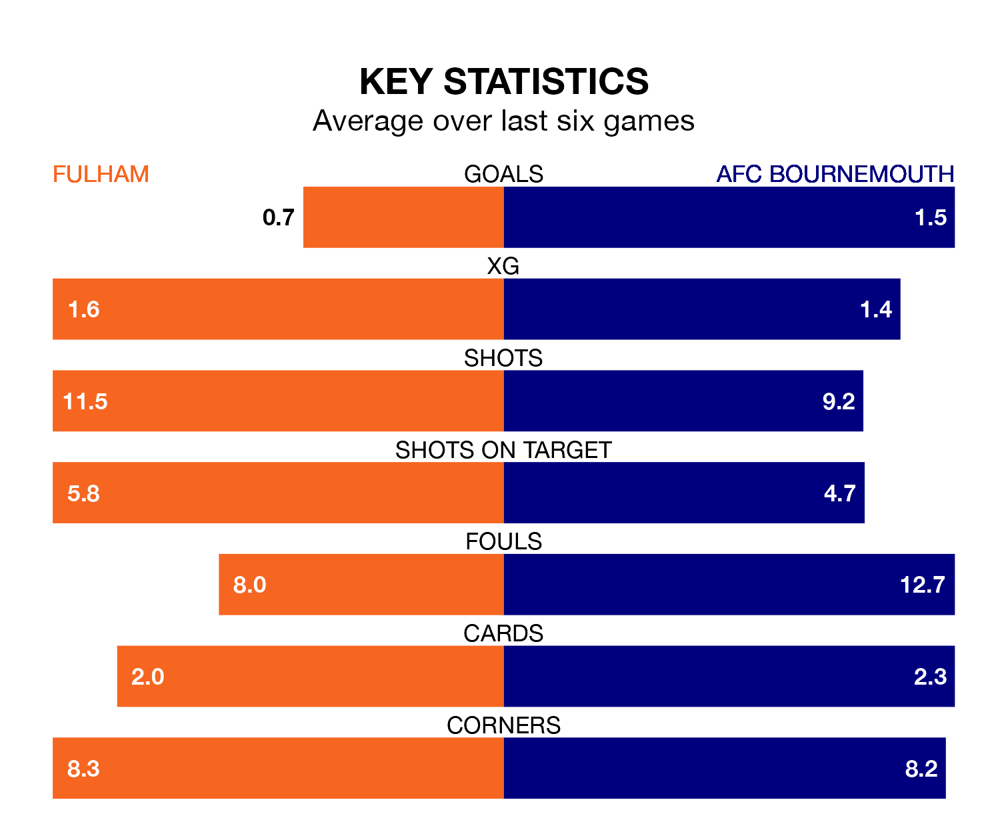

AFC Bournemouth travel to Fulham on Saturday in the Premier League.
The visitors come into the game on the back of a draw in their last match, having tied with Nottingham Forest 1-1 at home, with a goal from Justin Kluivert.
The Cottagers also drew their last match, 2-2 against Burnley, with their goals scored by João Palhinha and Rodrigo Muniz.
In the last 10 years, Fulham and Bournemouth have played each other on nine occasions. Fulham won one of them, Bournemouth five, and they drew three times.
On average, the Cottagers scored 0.8 goals and the Cherries 2.1 in those matches.
Their last meeting was on December 26, when Bournemouth won 3-0 at home.
In Dominic Solanke, Bournemouth have one of the league's most on-form strikers so far this season. He has notched 13 goals in 22 appearances, to sit third in the scoring charts.
His goal rate of one every 151 minutes is quicker than that of Raúl Jiménez, Fulham's top scorer with a goal every 250 minutes, and a total of five goals in 19 games.
The Cottagers are in disappointing form in the Premier League, with one win and two draws from their last six games.
With two wins and two draws over that period, the Cherries's form is better – they have taken eight points from 18, compared to the hosts' five.
Fulham are 14th in the table after 23 games, of which they have won seven and drawn five, earning 26 points.
The away side are one place ahead of Fulham in 13th, with seven wins and six draws putting them on 27 points.
With 30 goals in 23 games so far this season, the Cottagers are scoring at below the league average rate with 1.3 goals per game. And they are conceding more than average, letting in 38 goals at a rate of 1.7 per game.
Bournemouth are also below average scorers, with 1.4 goals per game, compared to a league average of 1.6. They have conceded 1.9 goals per game.
Saturday's match will be refereed by Darren England, who has taken charge of four Premier League games so far this season, issuing no red cards and booking 23 players. He has awarded one penalty.
He is yet to oversee a match featuring either Fulham or Bournemouth this season.
Updated: 11:18 (UTC), 08/02/24